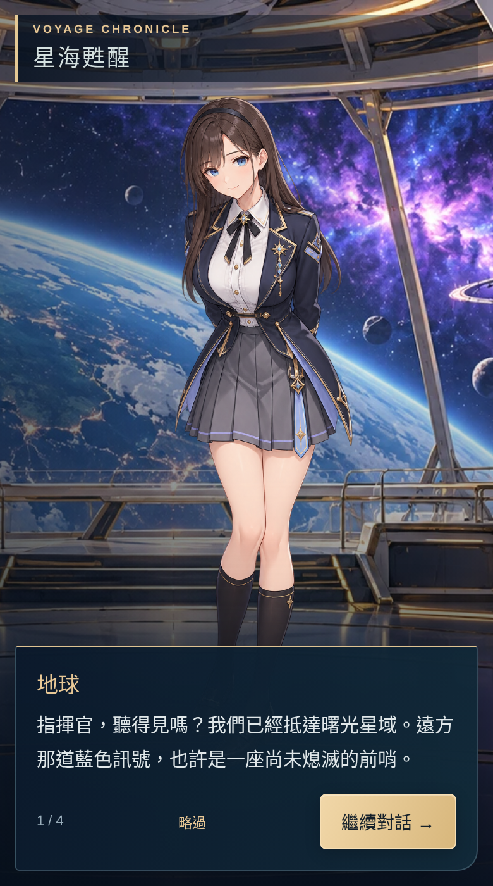
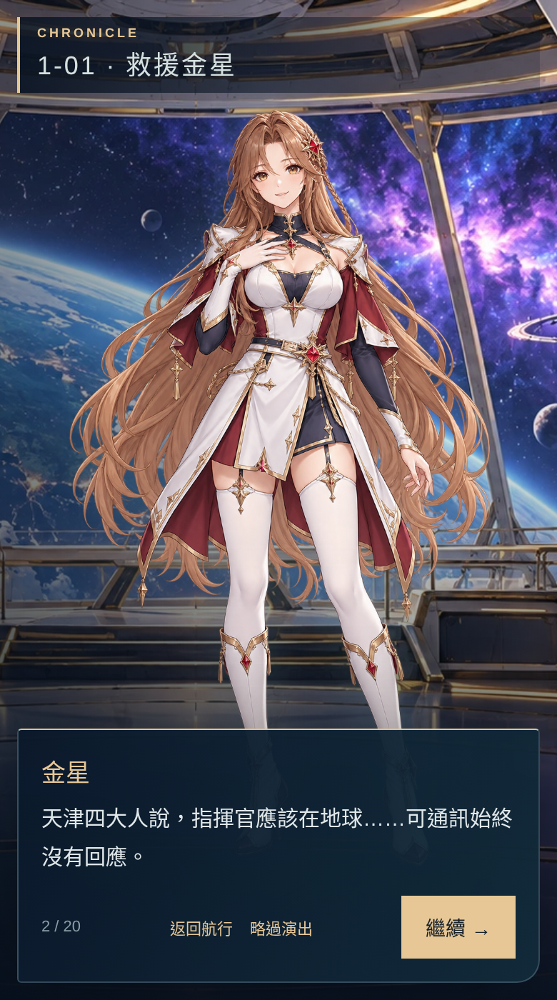
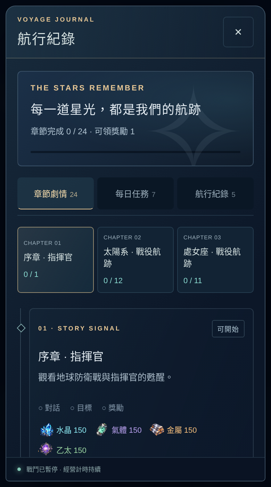
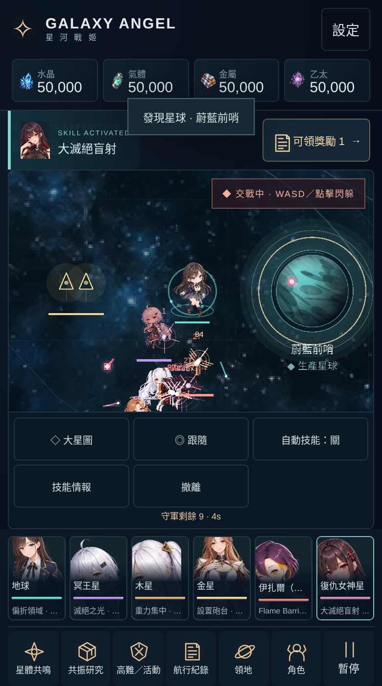
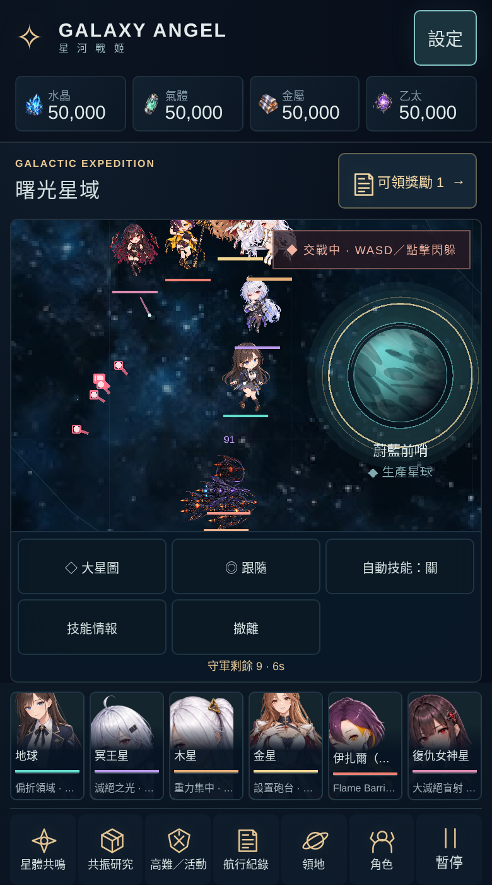
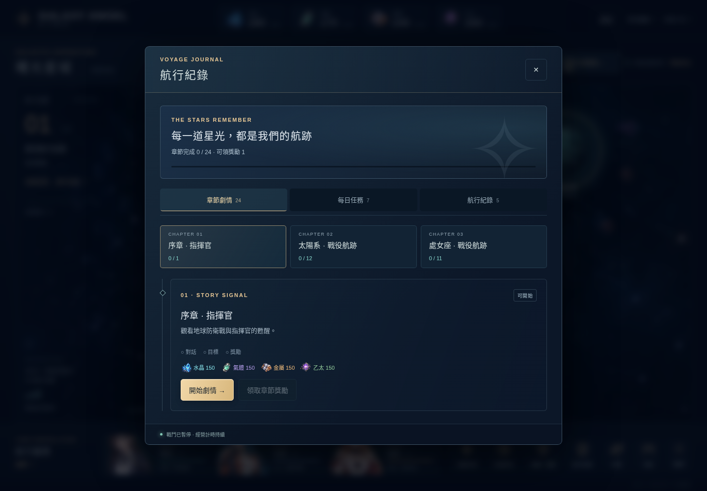

手機：角色與操作各有空間

舊對話 · 390×700 / DPR2。標題避開臉，腿腳允許延伸到對話框後。
新劇情播放器 · 同一套角色安全區，對話可捲動且不被經營存檔重置。
24節點按內容chapter分組，目標／已讀／領獎分離；每日與舊紀錄有各自分頁。手機：六人技能與有效危險提示

實際Combat，六名原技能角色手動施放；按鈕與戰場畫布分開。
低特效 · 只省略裝飾ADD層。敵彈亮芯、範圍與光束邊界保留。下列影片是隔離測試的實際操作錄影，包含對話、長文／章節領獎回看，以及六人技能與低特效切換；fixture有明示提高敵人生命、降低敵方傷害以便審閱，不代表平衡或硬體效能驗收。
桌機：沿用同一視覺層級

1440×1000。另已試套320×568與844×390；詳細分階段結果與失敗修正保留在交接收據。